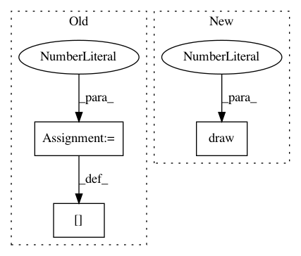

0ad4e0c8dd5f918c2cdb29186b8212a3107cca57,trackpy/tests/test_feature.py,CommonFeatureIdentificationTests,test_topn,#CommonFeatureIdentificationTests#,272
Before Change
pos2 = np.array([14, 14])
pos3 = np.array([7, 14])
image = np.ones(dims, dtype="uint8")
image[tuple(pos1[::-1])] = 100
image[tuple(pos2[::-1])] = 80
image[tuple(pos3[::-1])] = 90
actual = tp.locate(image, 5, 1, topn=2, preprocess=False, engine=self.engine)[cols]
actual = actual.sort(["x", "y"]) // sort for reliable comparison
After Change
image = np.ones(dims, dtype="uint8")
draw(image, pos1, 100)
draw(image, pos2, 90)
draw(image, pos3, 80)
actual = tp.locate(image, 5, 1, topn=2, preprocess=False,
engine=self.engine)[cols]
actual = actual.sort(["x", "y"]) // sort for reliable comparison
expected = DataFrame([pos1, pos2], columns=cols).sort(["x", "y"])
In pattern: SUPERPATTERN
Frequency: 3
Non-data size: 3
Instances
Project Name: soft-matter/trackpy
Commit Name: 0ad4e0c8dd5f918c2cdb29186b8212a3107cca57
Time: 2014-07-25
Author: daniel.b.allan@gmail.com
File Name: trackpy/tests/test_feature.py
Class Name: CommonFeatureIdentificationTests
Method Name: test_topn
Project Name: soft-matter/trackpy
Commit Name: 0ad4e0c8dd5f918c2cdb29186b8212a3107cca57
Time: 2014-07-25
Author: daniel.b.allan@gmail.com
File Name: trackpy/tests/test_feature.py
Class Name: CommonFeatureIdentificationTests
Method Name: test_all_maxima_filtered
Project Name: soft-matter/trackpy
Commit Name: 0ad4e0c8dd5f918c2cdb29186b8212a3107cca57
Time: 2014-07-25
Author: daniel.b.allan@gmail.com
File Name: trackpy/tests/test_feature.py
Class Name: CommonFeatureIdentificationTests
Method Name: test_maxima_in_margin